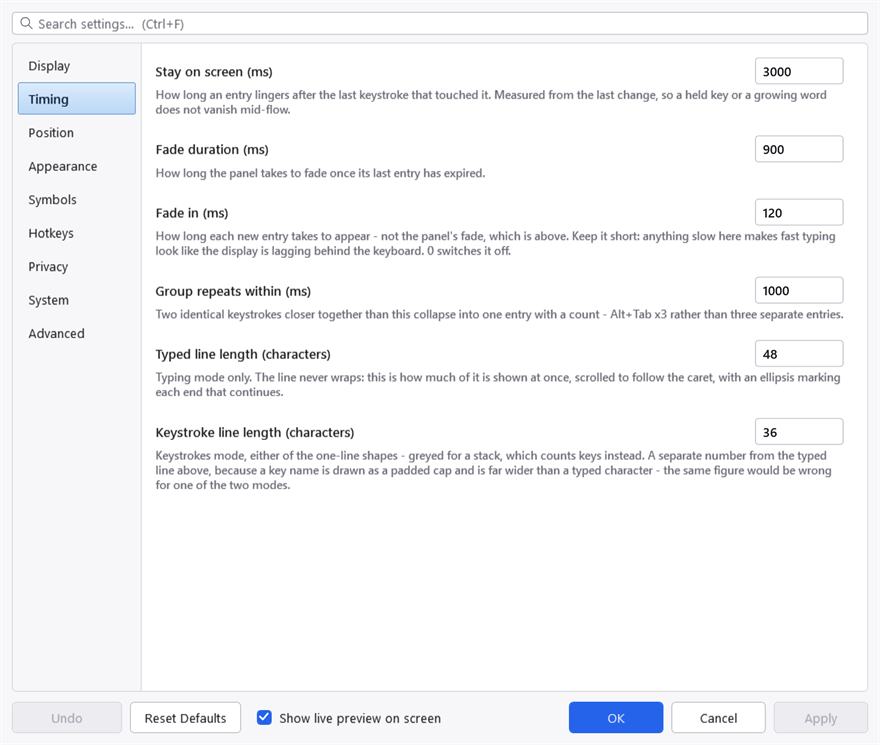

Troubleshooting
Nothing appears when I press keys
Work through these in order.
Is it paused? The tray icon is grey while paused, and the menu's first command reads Resume Recording. Ctrl+Alt+P toggles it.
Is the program you are typing into on the exclusion list? Check the Privacy tab. A listed program produces no display at all.
Is the display somewhere you are not looking? If Monitor is set to a specific screen, the panel is on that screen and nowhere else. Set it to Follow the window I am typing in to find out.
The quickest way to settle it is to open Settings and look at Show live preview on screen at the bottom of the window. Ticked — which it is by default — a sample sits on the real overlay for as long as the dialogue is open, and the line under the preview names the corner and the monitor it went to. On a two-monitor desk this is nearly always the answer: the panel is doing what it was told, on the screen you are not facing.
Has it ended up behind your other windows? The panel is always-on-top, and Windows can still lose that — a full-screen program is the usual culprit — after which the panel carries on working, correctly, out of sight underneath whatever is maximised. It looks identical to a display that has stopped. KeyPressOSD puts itself back every time it shows something, so pressing a key is the test: if the panel appears, that was it, and it has already fixed itself. If you would rather not wait for it, Restart KeyPressOSD from the tray menu starts a fresh copy.
Is the window you are typing into elevated? If it is, Always Run as Administrator in the tray menu fixes it — see Known limitations. A non-elevated process does not receive input destined for a higher-integrity window — Windows does not deliver it. This is the one that catches people, because the display works everywhere except the one application they are trying to demonstrate. See Known limitations.
Was KeyPressOSD started from a script or a terminal? A process launched from an automation shell can inherit a restricted context in which its global keyboard hook receives nothing real. It looks like it is running and doing nothing. Start it from Explorer, from the Start menu, or from a scheduled task.
It appeared and then stopped

The Timing tab, which is where most "it disappeared too quickly" answers are.
Windows silently removes a low-level hook whose callback misses a deadline — 300 ms by default — and there is no error anywhere when it does. A machine under very heavy load can lose the hook this way.
Exit and start KeyPressOSD again. If it happens repeatedly on a machine that is not otherwise struggling, that is worth reporting.
Alt+Tab shows no repeat count
It should. If it does not, the window Alt+Tab is switching to may be an elevated one — see above.
Note that a third-party Alt+Tab replacement running elevated will take the whole chord out of reach for the same reason.
Alt+Tab shows nothing at all
Different from the section above, and the cause is a queue rather than a privilege.
Another program with a keyboard hook can handle Alt+Tab and stop it there, so KeyPressOSD never learns the keys were pressed. A third-party Alt+Tab replacement is the usual one. Hooks are called in a chain, a new one goes to the front, and the program that started last is asked first — so restarting that program puts it ahead of KeyPressOSD.
Reclaim Keyboard Priority, in the tray menu, puts KeyPressOSD back at the front. It costs the other program nothing: KeyPressOSD never stops a keystroke, it only watches them go past.
Check the privilege before you reach for it, though, because the two faults look identical from the outside and only one of them has a menu item. Equal privilege is necessary — a program running higher than KeyPressOSD keeps its input out of reach entirely, whatever order the hooks are in — but it is not sufficient, because a hook that has already stopped a keystroke cannot be overruled by anything.
Two things tell you which one you have. KeyPressOSD's own rights: hover the tray icon, which says "administrator" when this copy is elevated, or read the sentence at the top of the System tab. And the other program's: if Task Manager shows it and not its command line, it is running higher than you are. If it is higher than KeyPressOSD, reclaiming the queue will change nothing — use Restart as Administrator in the tray menu, or Always Run as Administrator if it is not set yet, and try again from there.
The order of the two also matters, and it is not the order you might expect: reclaiming helps when the other program started after KeyPressOSD, and if it starts after you every time — a program that restarts itself, or one launched later at sign-in — the durable fix is to have KeyPressOSD's own sign-in task start last. A short delay on it in Task Scheduler does that.
Print Screen does not appear
Known and not resolved. See Known limitations.
The panel is bigger or smaller than I want
Reach for Appearance → Spacing before the font size. Panel padding and key cap padding are what the panel's size is actually made of at a given font size, and changing them keeps the text readable.
The panel has no visible edge
Over dark chrome — a terminal, a maximised editor, a full-screen video — a dark translucent panel has no edge of its own. That is what Panel outline is for, on the Appearance tab. It is on by default; if you have turned it off, that is why.
The application icon looks soft
The display enlarges whatever icon Windows hands over. That is usually a 256-pixel image, and enlarging one of those looks fine — but some programs only offer 32 pixels, and enlarging that to the height of a key cap cannot look sharp.
Reduce Application icon size on the Appearance tab, or turn the icon off.
The help file shows blank pages
Windows has marked the .chm as coming from the internet. Every page renders as "Navigation to the webpage was canceled", which looks like a corrupt file and is not.
Right-click KeyPressOSD.chm, choose Properties, and tick Unblock at the bottom of the General tab.
A hotkey does nothing
Another program already owns the chord. Windows gives a hotkey to whoever registered it first, and the later registration simply fails. See Hotkeys.
A setting I changed had no effect
Two likely causes.
You did not press Apply or OK. Changes are live on the display immediately but are not saved until you commit them; Cancel puts them back.
You edited a default in the source. A settings file that already has a value for something outranks a changed default — the file is loaded over the defaults, so editing the default does nothing for a copy that has already run once.
Reporting something
About → Copy Details puts the version, build date, Windows build and runtime on the clipboard, so a report does not have to be transcribed from a screenshot.
Please say which of the two modes you were in, and whether the window you were typing into was elevated. Those two answers between them explain most of what gets reported.
Project on GitHub · MIT licence ·
This manual is generated from docs/manual.